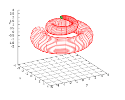

Calc Three Final Review
Cylindrical Coordinates
- x = r Cos(θ)
- y = r Sin(θ)
- z = z
- Jacobian = r
- The function represents a mass density formula allowing this to calculate mass or volume(if F = 1)
- Process: rewrite F(x,y,z) and mulitply by r. Then integrate over r, z, and θ
Spherical Coordinates
- x = ρ Cos(θ) Sin(φ)
- y = ρ Sin(θ) Sin(φ)
- z=ρ Cos(φ)
- Jacobian = ρ2 Cos(φ)
- Process: rewrie F in terms of θ, ρ, and φ. Mulitpy by the Jacobian and integrate over θ, ρ, and φ
General Change of Variables
- Jacobian: (dx/du)(dy/dv) - (dx/dv)(dy/du)
- Tips for choosing bounds: notice the equations of the lines. Are they simlar except for a constant? Try using the range of the constant as a bound

Vector Fields
- Can represent fulid flow, current, or gravity
- Can represnt the gradient of a scalar funtion

Scalar Line Integrals
- Paramterize the path c in terms of t
- Mulitpy F(x(t),y(t)) and |r'(t)|
- Integrate over the values of t the paramterize c
- Can represent mass of wire with mass density of F
- Can represent the area of a wall build on path C with height of F
- ∫CF ds

Line Integral of Vector Function
- Paramaterize path in terms of t (direction matters)
- Take the dot product of F(x(t),y(t)) and r'(t)
- integrate over t
- Can represent work done by a vector field along the path C
- ∫CF(vector function) dr
Fundamental Theorem For Line Integrals
- F is conservative if Py = Qx or if the curl is 0
- If F is conservative and closed, the work done is equal to zero
- If F is conservative and not closed, then there exsists a funition G, such that the gradient of G is equal to F.
- Thus, an integral can be caculated by G(b) - G(a)
Finding A Potential Function
- Remember the F is the partial derevatives of the function we are trying to find
- Take the integral with respect to x of the first term of F
- The result has a plus c term (g(y,z))that is defined by the remaining variables
- Take the derivative with repsect to to one of the other variables and compare to the associated term of F
- integrate g'(y,z) as found in the previous step to find the c constant for G
- Repeat as necessary for all variables
Greene's Theorem
- Applied to Line integrals over a vecotr field when C is a simple, closed, and counterclockwise region
- ∫C F ⟨ P,Q⟩ dr = ∫∫Qx - py dA
Curl and Divergence
- 2D curl is Qx - Py
- 2D curl is a scalar: postive = counterclockwise negative = clockwise zero = no spin and feild is conservative
- 3D curl is ⟨dx,dy,dz⟩ x ⟨P, Q, R⟩
- Divergence = Px + Qy+ Rz
Parametric Surfaces
- Surfaces can be paramterized by two variables (for eample x = u, y = v and then plug in x and y for z)
- ru x rv gives the normal vector for any point which can be used to write and equation for a tangent plan

Surface Integrals
- ∫∫s F(x,y,z) ds = ∫∫[uxv]f(u,v) |ru x rv| dA
- This represents the mass of a surface with the mass density function of F
- If F = 1, then this represents the surface area
- ∫∫s F⟨x,y,z⟩ ds = ∫∫[uxv]f(u,v) (±ru x rv) dA
- Downwards orientation: add constant so that the z component of the normal vector is negative
- Upwards orientation: add constant so that the z component of the normal vector is positve
- This represents the flux or flow through the surface